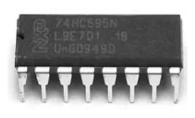

The Arduino board has 13 digital pins that we can use as outputs—but sometimes 13 just isn’t enough. To add outputs, we can use a shift register and still have plenty of room left on the Arduino for outputs. A shift register is an integrated circuit (IC) with eight digital output pins that can be controlled by sending a byte of data to the IC. For our projects, we will be using the 74HC595 shift register shown in Figure 6-4.

The 74HC595 shift register has eight digital outputs that can operate like the Arduino digital output pins. The shift register itself takes up three Arduino digital output pins, so the net gain is five output pins.
The principle behind the shift register is simple: We send 1 byte of data (8 bits) to the shift register, and it turns on or off the matching eight outputs based on the 1 byte of data. The bits representing the byte of data match the output pins in order from highest to lowest. So the leftmost bit of the data represents output pin 7 of the shift register, and the rightmost bit of the data represents output pin 0. For example, if we send B10000110 to the shift register, then it will turn on outputs 7, 2, and 1 and will turn off outputs 0 and 3–6 until the next byte of data is received or the power is turned off.
More than one shift register can also be connected together to provide an extra eight digital output pins for every shift register attached to the same three Arduino pins; this makes shift registers very convenient when you want to control lots of LEDs. Let’s do that now by creating a binary number display.